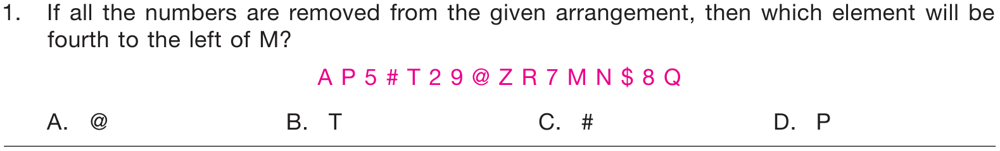
If all the numbers are removed from the given arrangement, then which element will be fourth to the left of M?
A P 5 # T 2 9 @ Z R 7 M N $ 8 Q
@
T
#
P
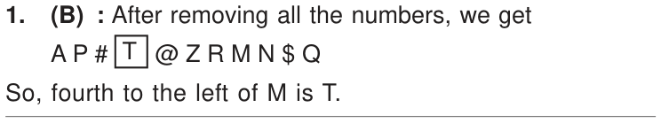
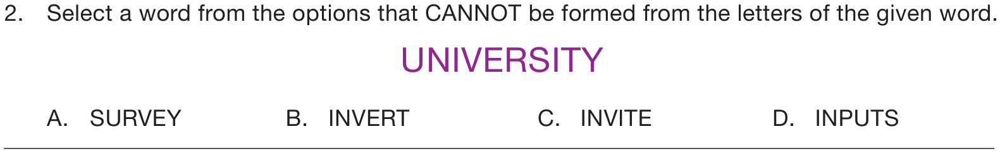
Select a word from the options that CANNOT be formed from the letters of the given word.
UNIVERSITY
SURVEY
INVERT
INVITE
INPUTS
The letter P of the word INPUTS is not present in the given word UNIVERSITY.
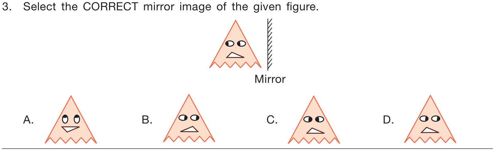
Select the CORRECT mirror image of the given figure.
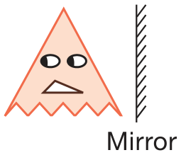
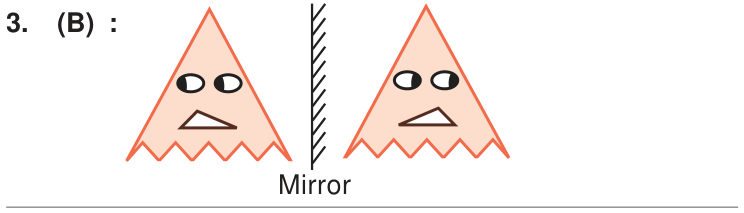
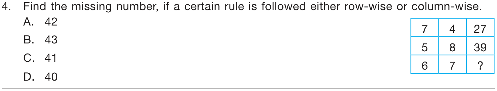
Find the missing number, if a certain rule is followed either row-wise or column-wise.
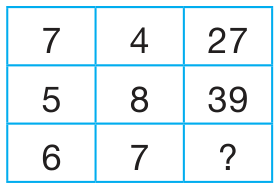
42
43
41
40
The rule followed is : 7 × 4 = 28 and 28 – 1 = 27;
5 × 8 = 40 and 40 – 1 = 39
So, 6 × 7 = 42 and 42 – 1 = 41
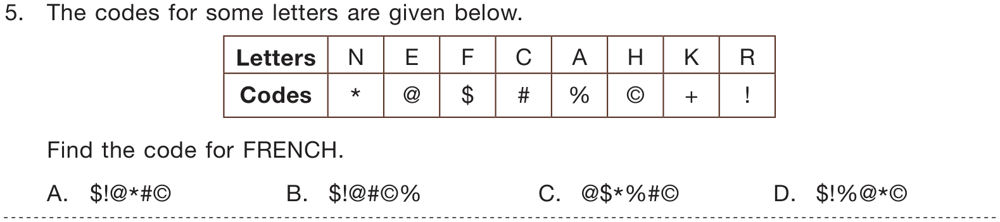
The codes for some letters are given below.
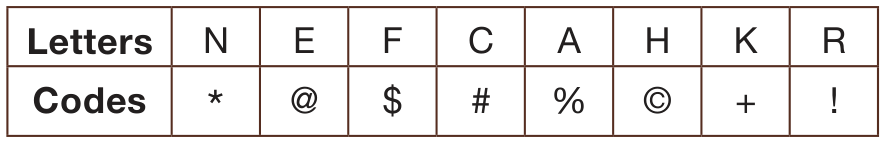
Find the code for FRENCH.
$!@*#©
$!@#©%
@$*%#©
$!%@*©
The code for FRENCH is $ ! @ * # ©.
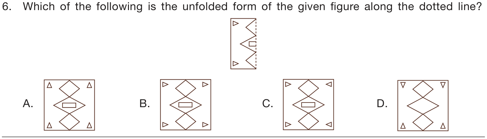
Which of the following is the unfolded form of the given figure along the dotted line?
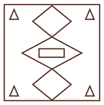
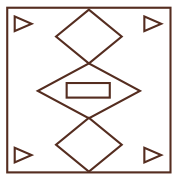
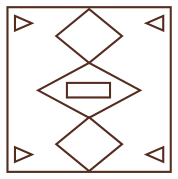
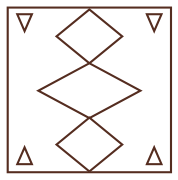
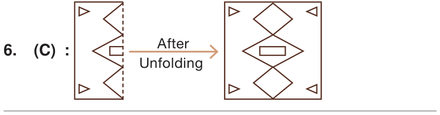
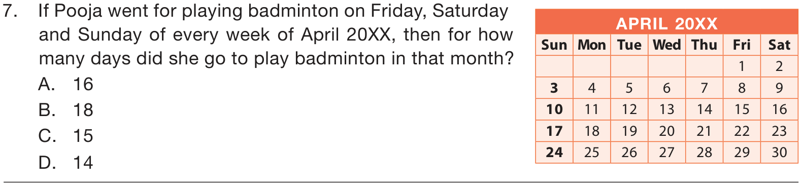
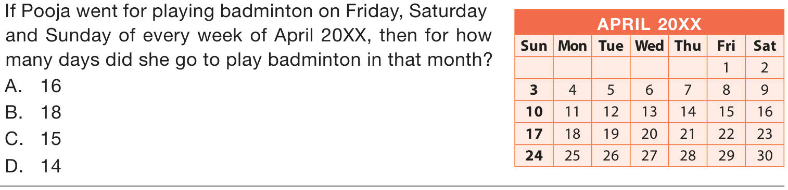
Option A
Option B
Option C
Option D
Days on which Pooja went for playing badminton are : 1, 2, 3, 8, 9, 10, 15, 16, 17, 22, 23, 24, 29 and 30 i.e., 14 days.
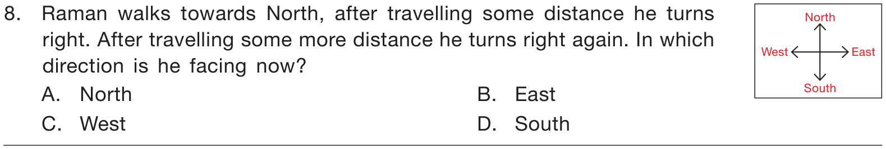
Raman walks towards North, after travelling some distance he turns right. After travelling some more distance he turns right again. In which direction is he facing now?
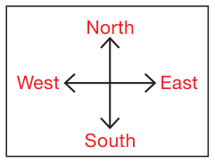
North
West
South
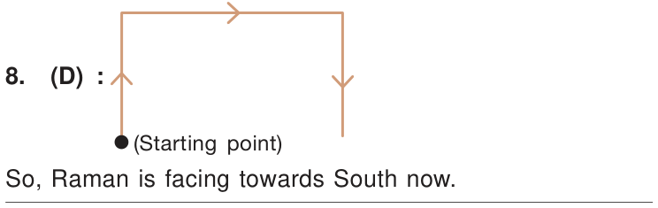
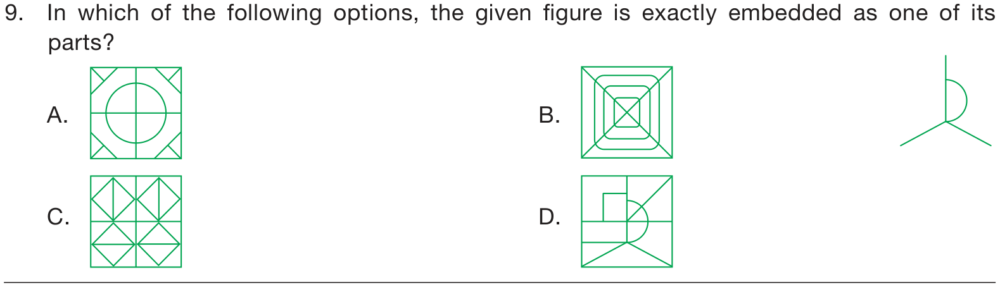
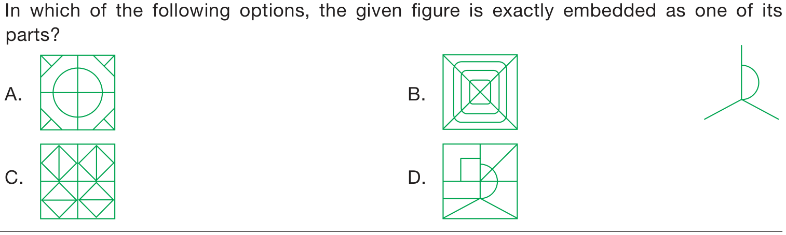
Option A
Option B
Option C
Option D
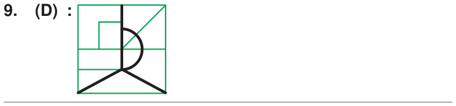
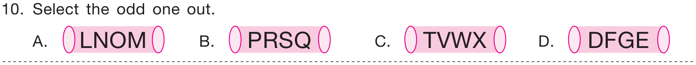
Select the odd one out.
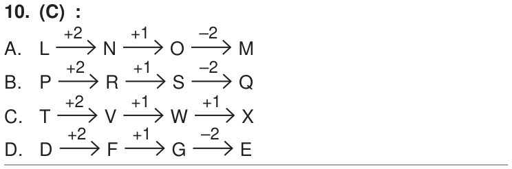
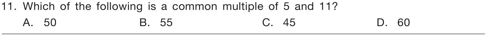
Which of the following is a common multiple of 5 and 11?
50
55
45
60
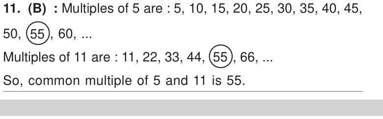
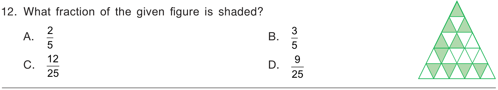
What fraction of the given figure is shaded?
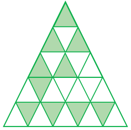
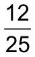
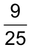
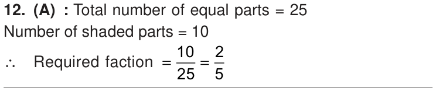
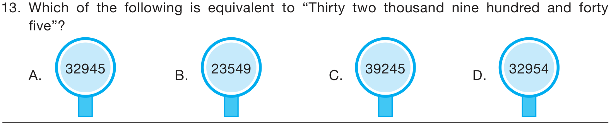
Which of the following is equivalent to “Thirty two thousand nine hundred and forty five”?
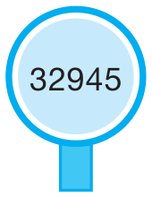
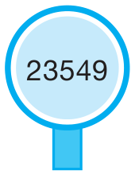
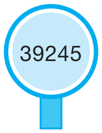
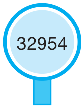
Thirty two thousand nine hundred and forty five = 32945
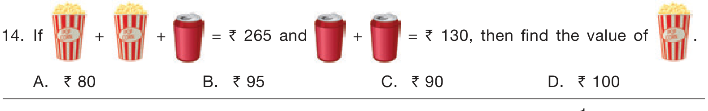
If
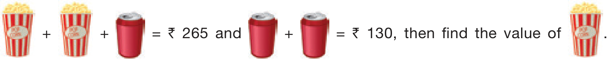
₹ 80
₹ 95
₹ 90
₹ 100
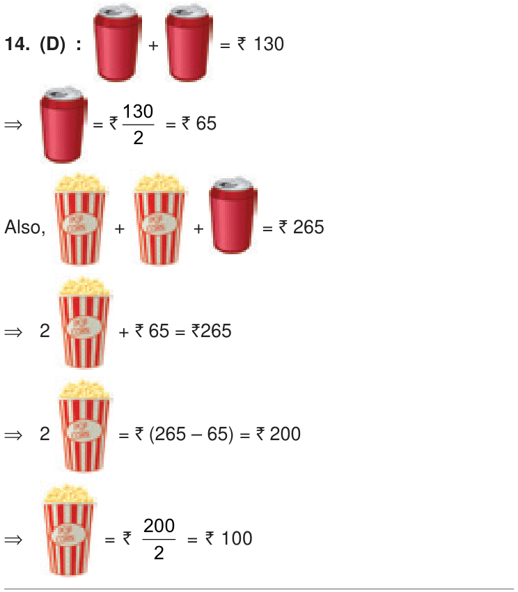
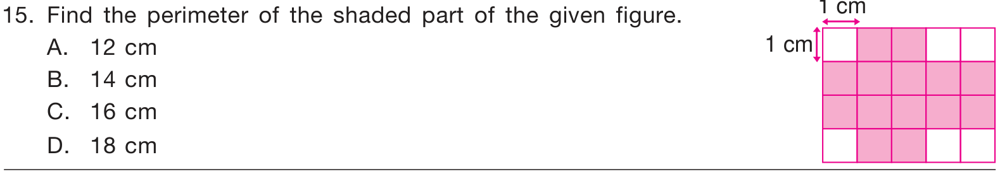
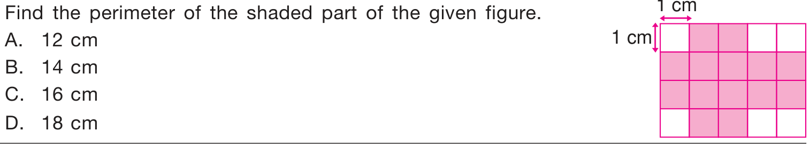
Option A
Option B
Option C
Option D
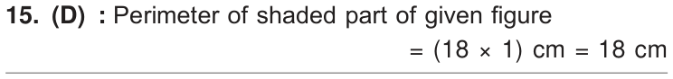
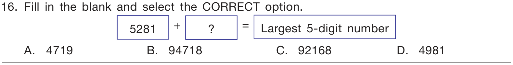
Fill in the blank and select the CORRECT option.
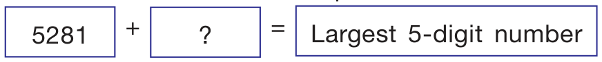
4719
94718
92168
4981
We have,
5281 + ? = Largest 5-digit number ⇒ 5281 + ? = 99999
⇒ ? = 99999 – 5281 = 94718
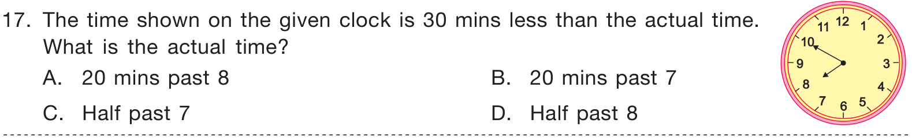
The time shown on the given clock is 30 mins less than the actual time. What is the actual time?
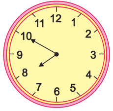
20 mins past 8
20 mins past 7
Half past 7
Half past 8
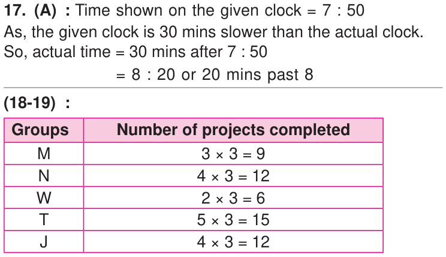
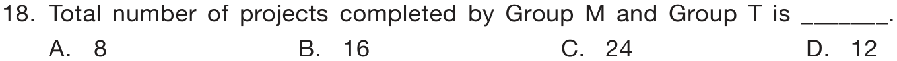
Direction (18-19) : The given pictograph shows the number of projects completed during the summer vacations by five groups of students. Study the graph carefully and answer the following questions.
Total number of projects completed by Group M and Group T is _______.
8
16
24
12
Total number of projects completed by Group M and Group T = 9 + 15 = 24
Direction (18-19) : The given pictograph shows the number of projects completed during the summer vacations by five groups of students. Study the graph carefully and answer the following questions.
Find the fraction of the number of projects completed by Group W to the number of projects completed by Group J.
Which of the following options is CORRECT for the given figure?
The given triangle has all of its sides equal.
The given triangle is an equilateral triangle.
Both A and B
Neither A nor B
As, all the sides of given triangle are equal, so it is an equilateral triangle.
The number of visitors at a Diwali mela on the first two days were 11523 and 9235. On the third day, there were 1580 visitors more than on the first day. How many total people visited the mela on all the three days?
25611
31915
33861
37141
Rashmi wants to make a smallest 5-digit number using the given digits (use each digit only once). What is the number that she will form?
34095
95430
40359
30459
Smallest 5-digit number formed = 30459
Jyoti read 541 pages during her summer reading program. In order to reach her goal of 650 pages, how many more pages does she need to read?
99
109
119
199
Number of pages Jyoti has to read = 650
Number of pages Jyoti already read = 541
\ Number of more pages need to be read = 650 – 541 = 109
Anurag bought 5
₹ 70
₹ 90
₹ 105
₹ 125
There are 480 notebooks in a bookstore. Out of which, 40 notebooks were sold on Monday and 80 notebooks were sold on Tuesday. What fraction of the total notebooks were sold on both the days?
Nisha used a piece of wire to make the given rectangle. If the length of rectangle is three times its breadth, then find the total length of wire used.
40 cm
30 cm
35 cm
45 cm
Puneet wanted to take the bus at 6:25 p.m. He arrived at the bus stop 40 minutes before 6:25 p.m. At what time did Puneet arrive at the bus stop?
5:35 p.m.
5:45 p.m.
4:45 p.m.
5:25 p.m.
As, 40 minutes before 6 : 25 p.m. is 5 : 45 p.m. So, Puneet arrived at bus stop at 5 : 45 p.m.
150
300
200
280
A barrel contains 30 litres of milk. A milk dealer empties it equally into 6 cans. Each can will hold ______ of milk.
5 L
24 L
36 L
180 L
Mr Sharma invited 276015 guests in his daughter’s marriage. Which of the following options shows the correct number name for number of guests invited by him?
Two lakh seventy six thousand nine hundred and five
Two lakh seventy six thousand and fifteen
Twenty seven lakh six thousand ninety five
Twenty seven lakh six thousand nine hundred and five
276015 in words is written as two lakh seventy six thousand and fifteen.
Option A
Option B
Option C
Option D
(i) Place value of digit 7 in 57254 = 7000
Face value of digit 7 in 57254 = 7
So, required difference = 7000 – 7 = 6993
(ii) The number 20853 when rounded off to nearest hundreds gives 20900.
Find the weight of
500 g
700 g
900 g
800 g
Study the given figures carefully and select the INCORRECT option based on the figures.
None of these
Match the figures given in Column I with their number of line(s) of symmetry given in
Column II and select the CORRECT option.
Column II
(p) (i) 0
(q) (ii) 2
(r) (iii) 1
(p)-(i); (q)-(iii); (r)-(ii)
(p)-(ii); (q)-(iii); (r)-(i)
(p)-(ii); (q)-(i); (r)-(iii)
(p)-(iii); (q)-(i); (r)-(ii)
Identify the 4-digit number using given clues.
8741
7824
7814
7274